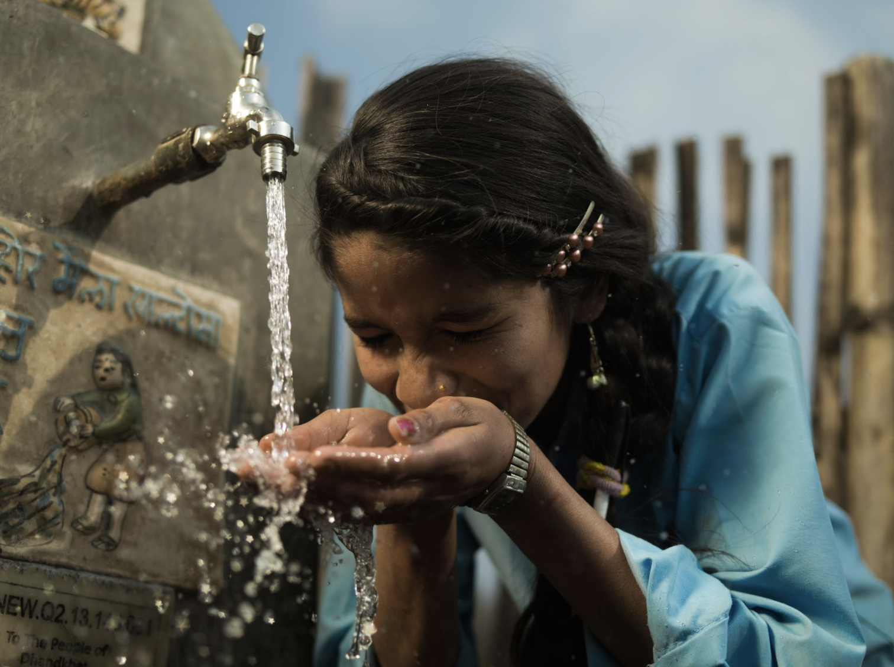

Our Mission
charity: water is on a mission to bring clean and safe drinking water to every person on the planet. With full transparency and real impact stories, we show you exactly where your money goes — and who it helps.
Join thousands of students proving that small actions create big change. 100% of every dollar funds clean water projects you can track.
Give $10. Change a Life.charity: water is on a mission to bring clean and safe drinking water to every person on the planet. With full transparency and real impact stories, we show you exactly where your money goes — and who it helps.

Amina used to walk miles every day to collect water for her family. Thanks to your support, her village now has a clean water well. Amina can go to school, and her family is healthier and happier.
Your generation can make clean water a reality. 100% of your donation goes directly to fund water projects that transform lives around the world.
Donate Now